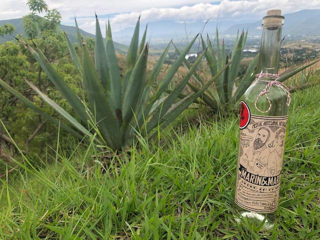

Marín y Marín Mezcal surge de la inquietud de los hermanos Enrique y Arcadio Marín, quienes emprendieron un viaje para conocer a fondo la herencia ancestral del mezcal y recorrieron Oaxaca de punta a punta. Fue en la región de Valles Centrales donde encontraron la tradición y el misticismo del maestro mezcalero Santos Martínez. Juntos, en búsqueda de una bebida espirituosa que retomara la tradición mezcalera originaria y después de varias producciones, llegaron a lo que ellos catalogan como “Bebida de Autor”: un mezcal premium 100% hecho a mano, totalmente artesanal, orgánico sin ningún tipo de aditamento ni agente añadido, ligero al paladar, pero con todo el peso y respeto que el destilado de agave se merece.
Como aprendices del maestro Santos, y en trabajo conjunto con la comunidad de Tlacolula, que cosecha el agave Espadín, Marín y Marín ha realizado varias producciones socialmente responsables: hartos de los abusos de los empresarios del mezcal, se creó una bebida que es 100% de comercio justo, y parte del dinero obtenido por las ventas regresa a la comunidad.
Además del tradicional destilado de Espadín, Marín y Marín produce un número limitado de mezcales a partir de agaves silvestres difíciles de recolectar, para llegar a bebidas supremas obtenidas por triple destilación: con maguey silvestre, el Tobalá, que tiene notas mas afrutadas; el Jabalín, que es un maguey de alto campo que se recolecta en la montaña, ultra refinado en cuanto a notas de tierra y frutas, la champaña de los mezcales. También ha producido Tepextate y ahora, para la edición especial de Día de Muertos, cuenta con una pequeña producción de Madre Cuish.
A diferencia de las marcas comerciales, Marín y Marín alcanza una graduación alcohólica de más de 42 % sin ningún aditamento durante el proceso, del que resultan notas afrutadas y terrosas características del mezcal puro. Acorde con el carácter artesanal de la producción, todas las botellas van seriadas y firmadas.
La imagen de Marín y Marín Mezcal, inspirada gráficamente en la época de la prohibición del alcohol en Estados Unidos y en los viejos licores “hechos en casa”, fue realizada por la ilustradora y artista multifacética Aurora Ares Two Twins. Así, la empresa se asume como una plataforma de difusión del talento mexicano en distintas expresiones.

Producción de Marín y Marín Mezcal
Espadín (el orgullo de la casa)
Mezcal blanco joven artesanal. HECHO A MANO, socialmente responsable, 100% orgánico de agave Espadín (angustifolia Haw) de cosecha propia. Cocido en horno cónico de piedra con leña de mezquite y encino. Molino de piedra de tracción animal. Fermentado con levaduras naturales en tinas de madera de pino. Envasado y etiquetado a mano. Producción limitada, numerada y firmada. Una chulada.
Reposado
Mezcal reposado en barrica de roble blanco americano, artesanal. HECHO A MANO, socialmente responsable, 100% orgánico de agave Espadín (angustifolia Haw) de cosecha propia. Cocido en horno cónico de piedra con leña de mezquite y encino. Molino de piedra de tracción animal. Fermentado con levaduras naturales en tinas de madera de pino. Envasado y etiquetado a mano. Producción limitada, numerada y firmada.
Edición especial
Mezcal artesanal, bebida espirituosa para honrar a los muertos.
Espadín (angustifolia Haw) joven y reposado con triple destilación. (80 botellas por producción)
Edición especial Madre Cuish (agave Karwinskii). (Sólo 6 botellas disponibles)
Producción de Marín y Marín Mezcal
Espadín (el orgullo de la casa)
Mezcal blanco joven artesanal. HECHO A MANO, socialmente responsable, 100% orgánico de agave Espadín (angustifolia Haw) de cosecha propia. Cocido en horno cónico de piedra con leña de mezquite y encino. Molino de piedra de tracción animal. Fermentado con levaduras naturales en tinas de madera de pino. Envasado y etiquetado a mano. Producción limitada, numerada y firmada. Una chulada.Reposado
Mezcal reposado en barrica de roble blanco americano, artesanal. HECHO A MANO, socialmente responsable, 100% orgánico de agave Espadín (angustifolia Haw) de cosecha propia. Cocido en horno cónico de piedra con leña de mezquite y encino. Molino de piedra de tracción animal. Fermentado con levaduras naturales en tinas de madera de pino. Envasado y etiquetado a mano. Producción limitada, numerada y firmada.Edición especial
Mezcal artesanal, bebida espirituosa para honrar a los muertos.Espadín (angustifolia Haw) joven y reposado con triple destilación. (80 botellas por producción)
Edición especial Madre Cuish (agave Karwinskii). (Sólo 6 botellas disponibles)
- Teléfono: 55-36-58-90-48
- Email: contacto@marinymarinmezcal.com